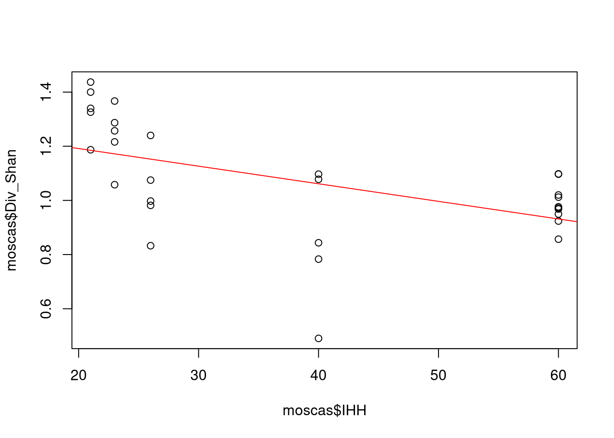
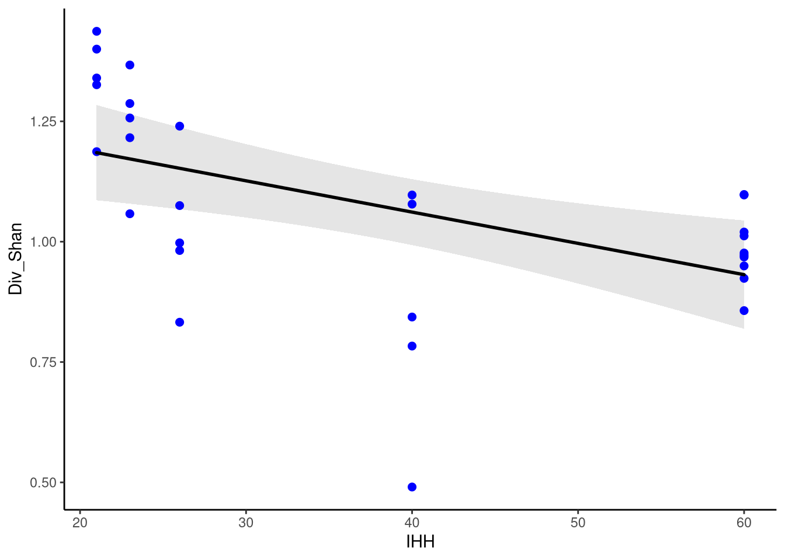
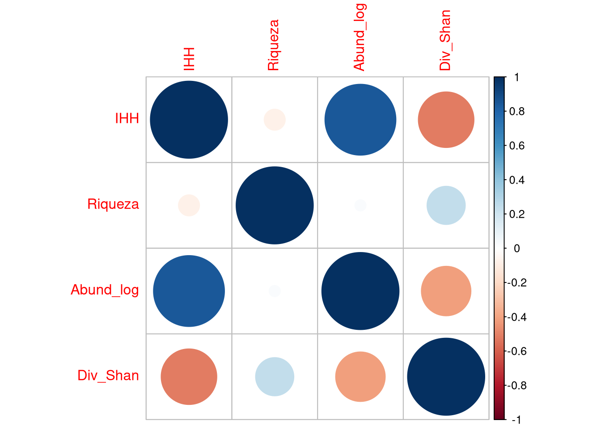
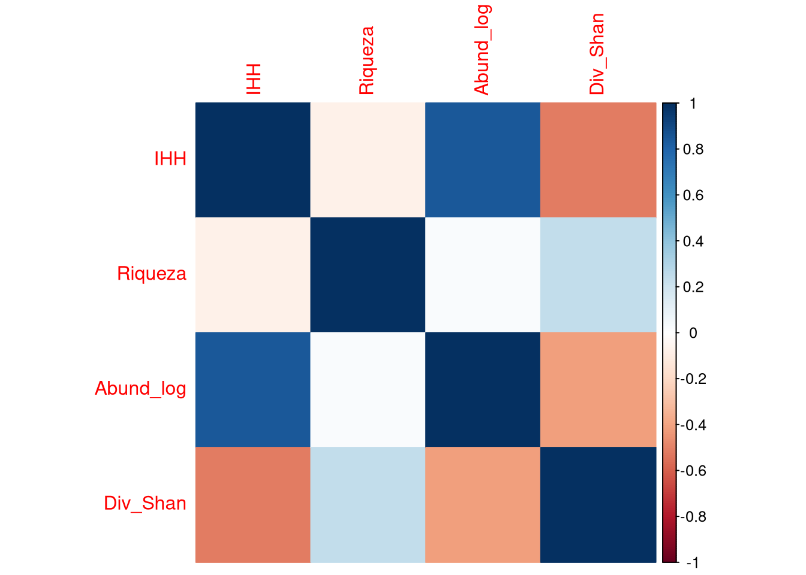
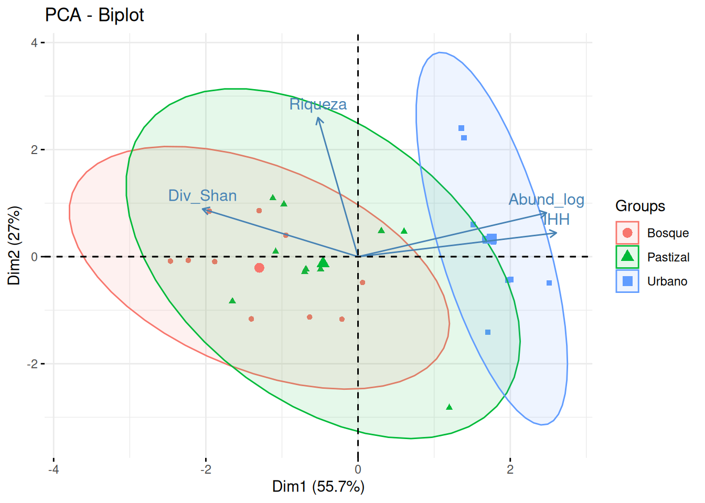
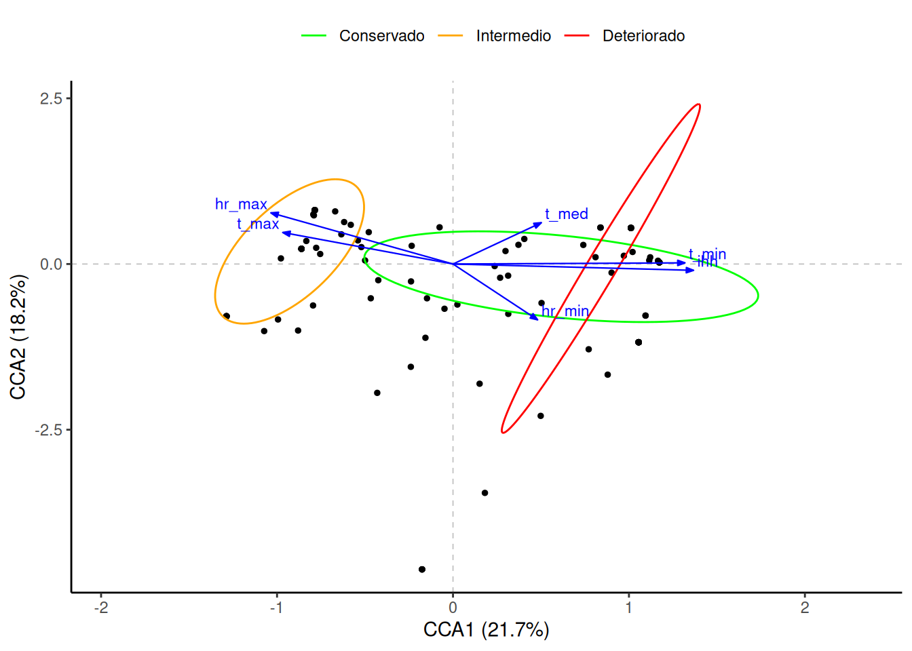
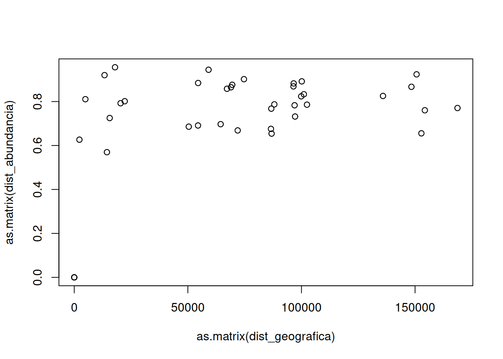

Capítulo 8: Evaluación de variables ambientales
Análisis de regresión
##
## Call:
## lm(formula = Div_Shan ~ IHH, data = moscas)
##
## Residuals:
## Min 1Q Median 3Q Max
## -0.571036 -0.076726 0.038677 0.108453 0.252099
##
## Coefficients:
## Estimate Std. Error t value Pr(>|t|)
## (Intercept) 1.3213624 0.0842165 15.6901 2.109e-15 ***
## IHH -0.0064982 0.0020184 -3.2195 0.003241 **
## ---
## Signif. codes: 0 '***' 0.001 '**' 0.01 '*' 0.05 '.' 0.1 ' ' 1
##
## Residual standard error: 0.18217 on 28 degrees of freedom
## Multiple R-squared: 0.27017, Adjusted R-squared: 0.24411
## F-statistic: 10.365 on 1 and 28 DF, p-value: 0.0032408

Figura 14: Modelo lineal con gráficos base
library(ggplot2)
ggplot(modelo$model, aes(x = IHH, y = Div_Shan)) +
geom_ribbon(
stat = "smooth",
method = "lm",
fill = "grey90"
) +
geom_point(size = 2, color = "blue") +
geom_smooth(
method = "lm",
color = "black",
linewidth = 1,
lineend = "round",
se = FALSE
) +
theme_classic()

Figura 15: Modelo líneal usando ggplot
Análisis de correlación
## IHH Riqueza Abund_log Div_Shan
## IHH 1.000000000 -0.074842989 0.845638906 -0.51978324
## Riqueza -0.074842989 1.000000000 0.021460627 0.24598646
## Abund_log 0.845638906 0.021460627 1.000000000 -0.41283679
## Div_Shan -0.519783241 0.245986457 -0.412836788 1.00000000

Figura 16: Gráficos prueba de correlación
##
## Pearson's product-moment correlation
##
## data: moscas$IHH and moscas$Div_Shan
## t = -3.21953, df = 28, p-value = 0.0032408
## alternative hypothesis: true correlation is not equal to 0
## 95 percent confidence interval:
## -0.74124543 -0.19626743
## sample estimates:
## cor
## -0.51978324Análisis de componentes principales (PCA)
library(factoextra)
data(moscas)
datos_estandarizados <- scale(moscas)
pca <- prcomp(datos_estandarizados, scale = TRUE)
summary(pca)## Importance of components:
## PC1 PC2 PC3 PC4
## Standard deviation 1.49205 1.03842 0.74337 0.37799
## Proportion of Variance 0.55655 0.26958 0.13815 0.03572
## Cumulative Proportion 0.55655 0.82613 0.96428 1.00000moscas$group <- sub(".*_([BUG]).*", "\\1", rownames(moscas))
moscas$group <- ifelse(
moscas$group == "B", "Bosque",
ifelse(moscas$group == "G", "Pastizal",
ifelse(moscas$group == "U", "Urbano", NA))
)
fviz_pca_biplot(pca, label = "var", addEllipses = TRUE, ellipse.level = 0.95, habillage = moscas$group)
## PC1 PC2 PC3 PC4
## SL_B1 -2.465815926 -0.082904652 -0.621213906 -0.519693940
## SL_B2 -1.883548726 -0.092357350 -0.377571613 -0.099020053
## SL_B3 -1.954558726 0.849625396 -0.064576061 -0.058657066
## SL_B4 -2.230852812 -0.066628984 -0.563419748 -0.333227738
## SL_B5 -1.402262235 -1.161632610 -0.275569270 0.056689477
## SL_G1 -0.685126508 -0.230910722 0.345359120 0.510353557
## SL_G2 -1.120142369 1.092403509 -0.251211010 0.600009129
## SL_G3 -1.082375305 0.093368208 -0.461949177 0.487723428
## SL_G4 -0.974323223 0.978648543 0.034481752 0.612707081
## SL_G5 -1.651091280 -0.832952801 -1.053272444 -0.010437215
## SL_U1 2.510094730 -0.487994288 -0.491244605 0.427312590
## SL_U2 1.667196397 0.338253296 -0.242514144 -0.196687443
## SL_U3 1.669893249 0.291578565 -0.147327866 -0.233526887
## SL_U4 1.777633656 0.276265005 -0.074884799 -0.166970059
## SL_U5 1.392947217 2.220736743 0.335466665 -0.214512197
## O_B1 -0.212729057 -1.168479085 0.150127838 0.532988704
## O_B2 0.059969748 -0.483402683 1.113886648 0.612618338
## O_B3 -0.949735755 0.401246523 1.180480923 -0.085569584
## O_B4 -0.635782772 -1.128991608 -0.092689358 0.254475746
## O_B5 -1.300144275 0.859943945 0.120107234 0.038083733
## O_G1 0.604811631 0.467494491 1.515094317 0.011912870
## O_G2 0.306275512 0.481078448 1.372551680 -0.196504373
## O_G3 1.199255739 -2.823814809 1.661880963 -0.215552785
## O_G4 -0.491892717 -0.233297276 0.265222476 -0.687240020
## O_G5 -0.701314612 -0.283843249 0.286404900 -0.883414620
## O_U1 1.357202195 2.402277439 -0.044499890 -0.089813350
## O_U2 1.514143771 0.600174724 -0.829858687 -0.091463491
## O_U3 1.704964077 -1.410138755 -1.182175393 -0.241370325
## O_U4 2.008583826 -0.429073121 -0.803521161 0.107221795
## O_U5 1.968724551 -0.436672843 -0.803565388 0.071564702Análisis de correspondecia canónica (CCA)
library(BiodiversityR)
library(ggplot2)
data(abundancia)
data(ambiente)
resultado_cca <- cca(abundancia$localidad ~ ., ambiente)
summary(resultado_cca)##
## Call:
## cca(formula = abundancia$localidad ~ estado_conservacion + ihh + t_min + t_max + t_med + hr_min + hr_max + hr_med + pp_14_dias_antes + pp_30_dias_antes + dist_al_rio, data = ambiente)
##
## Partitioning of scaled Chi-square:
## Inertia Proportion
## Total 2.352 1
## Constrained 2.352 1
## Unconstrained 0.000 0
##
## Eigenvalues, and their contribution to the scaled Chi-square
##
## Importance of components:
## CCA1 CCA2 CCA3 CCA4 CCA5 CCA6 CCA7
## Eigenvalue 0.51124 0.42762 0.36499 0.29458 0.26833 0.217375 0.149886
## Proportion Explained 0.21736 0.18181 0.15518 0.12525 0.11409 0.092422 0.063727
## Cumulative Proportion 0.21736 0.39918 0.55436 0.67961 0.79369 0.886116 0.949843
## CCA8
## Eigenvalue 0.117969
## Proportion Explained 0.050157
## Cumulative Proportion 1.000000
##
## Accumulated constrained eigenvalues
## Importance of components:
## CCA1 CCA2 CCA3 CCA4 CCA5 CCA6 CCA7
## Eigenvalue 0.51124 0.42762 0.36499 0.29458 0.26833 0.217375 0.149886
## Proportion Explained 0.21736 0.18181 0.15518 0.12525 0.11409 0.092422 0.063727
## Cumulative Proportion 0.21736 0.39918 0.55436 0.67961 0.79369 0.886116 0.949843
## CCA8
## Eigenvalue 0.117969
## Proportion Explained 0.050157
## Cumulative Proportion 1.000000## No residual component
##
## Model: cca(formula = abundancia$localidad ~ estado_conservacion + ihh + t_min + t_max + t_med + hr_min + hr_max + hr_med + pp_14_dias_antes + pp_30_dias_antes + dist_al_rio, data = ambiente)
## Df ChiSquare F Pr(>F)
## Model 8 2.35199
## Residual 0 0.00000plot_cca <- plot(resultado_cca)
elipses_plot_cca <- ordiellipse(resultado_cca, ambiente$estado_conservacion)# ---- Extracción de datos para graficar ----
sitios <- sites.long(plot_cca)
especies <- species.long(plot_cca)
multiplicador <- attr(plot_cca$biplot, "arrow.mul")
vectores <- data.frame(plot_cca$biplot * multiplicador, row.names(plot_cca$biplot))
colnames(vectores) <- c("axis1", "axis2", "labels")
elipses <- ordiellipse.long(elipses_plot_cca)
nombres_ejes <- axis.long(resultado_cca)# ---- Gráfico ----
ggplot() +
xlab(nombres_ejes[1, "label"]) +
ylab(nombres_ejes[2, "label"]) +
scale_x_continuous(expand = c(0.2, 0.2)) +
geom_vline(
xintercept = c(0),
color = "grey",
linetype = 2,
linewidth = 0.3
) +
geom_hline(
yintercept = c(0),
color = "grey",
linetype = 2,
linewidth = 0.3
) +
geom_point(
data = especies,
aes(x = axis1, y = axis2),
size = 1
) +
geom_path(
data = elipses,
aes(x = axis1, y = axis2, group = Grouping, color = Grouping)
) +
scale_colour_manual(
name = "",
breaks = c("ECB", "ECI", "ECD"),
labels = c("Conservado", "Intermedio", "Deteriorado"),
values = c("green", "orange", "red")
) +
geom_segment(
data = vectores,
aes(x = 0, y = 0, xend = axis1, yend = axis2),
linewidth = 0.4, color = "blue",
arrow = arrow(angle = 20, length = unit(1.5, "mm"), type = "closed")
) +
geom_label(
data = vectores,
aes(x = axis1, y = axis2, label = labels, hjust = "outward", vjust = "outward"),
fill = NA,
label.size = NA,
label.padding = unit(0.2, "lines"),
color = "blue",
size = 3
) +
theme_classic() +
theme(legend.position = "top")
Test de Mantel en R
library(BiodiversityR)
library(geosphere)
data(abundancia)
data(coords)
dist_abundancia <- vegdist(abundancia$localidad, method = "bray")
dist_geografica <- as.dist(distm(coords, fun = distHaversine))
resultado_mantel <- mantel(dist_abundancia, dist_geografica, method = "pearson", permutations = 9999)
resultado_mantel##
## Mantel statistic based on Pearson's product-moment correlation
##
## Call:
## mantel(xdis = dist_abundancia, ydis = dist_geografica, method = "pearson", permutations = 9999)
##
## Mantel statistic r: 0.10093
## Significance: 0.2745
##
## Upper quantiles of permutations (null model):
## 90% 95% 97.5% 99%
## 0.261 0.365 0.451 0.520
## Permutation: free
## Number of permutations: 9999

Figura 17: Gráfico de dispersión matrices de distancia